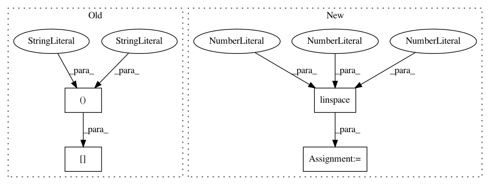

8c0361313db0d1c8006f5b81e9310ec2d70aedb3,test/examples/test_batch_svgp_gp_regression.py,TestSVGPRegression,test_regression_error,#TestSVGPRegression#,69
Before Change
def test_regression_error(self):
train_x, train_y = train_data()
likelihood = GaussianLikelihood()
model = SVGPRegressionModel(train_x[:, :25, :])
mll = gpytorch.mlls.VariationalELBO(likelihood, model, num_data=train_y.size(-1))
// Find optimal model hyperparameters
After Change
def test_regression_error(self):
train_x, train_y = train_data()
likelihood = GaussianLikelihood()
inducing_points = torch.linspace(0, 1, 25).unsqueeze(-1).repeat(2, 1, 1)
model = SVGPRegressionModel(inducing_points)
mll = gpytorch.mlls.VariationalELBO(likelihood, model, num_data=train_y.size(-1))
// Find optimal model hyperparameters
In pattern: SUPERPATTERN
Frequency: 3
Non-data size: 4
Instances
Project Name: cornellius-gp/gpytorch
Commit Name: 8c0361313db0d1c8006f5b81e9310ec2d70aedb3
Time: 2018-11-14
Author: gpleiss@gmail.com
File Name: test/examples/test_batch_svgp_gp_regression.py
Class Name: TestSVGPRegression
Method Name: test_regression_error
Project Name: cornellius-gp/gpytorch
Commit Name: 1e96334c79060b60c51c7d3b85bea7048d8e1ad2
Time: 2019-09-29
Author: kaw293@cornell.edu
File Name: test/kernels/test_grid_kernel.py
Class Name:
Method Name:
Project Name: cornellius-gp/gpytorch
Commit Name: 8c0361313db0d1c8006f5b81e9310ec2d70aedb3
Time: 2018-11-14
Author: gpleiss@gmail.com
File Name: test/examples/test_batch_svgp_gp_regression.py
Class Name: TestSVGPRegression
Method Name: test_regression_error_cuda